The Rep Rot Blog
Practical guides for spending less time scrolling and more time moving: screen time, habits, bodyweight training and getting out of bed.

100 Push-Ups a Day: Who It's For and How to Do It Safely
Thinking about 100 push-ups a day for 30 days? A two-minute test to see if you're ready, a 4-week ramp, a safer weekly plan and the signs that mean stop.
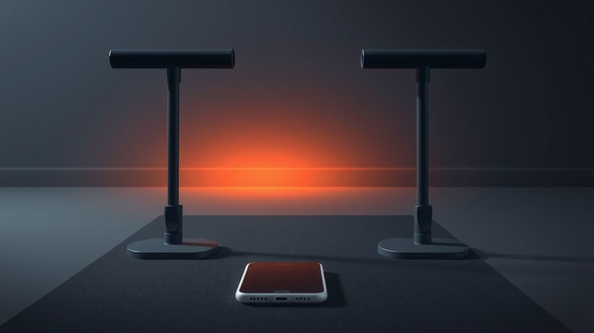
Push-Ups and Wrist Pain: 7 Fixes, Easiest First
Push-ups hurting your wrists? Why it happens, seven fixes from easiest to biggest change, how to build your wrists back up, and the signs that mean stop.
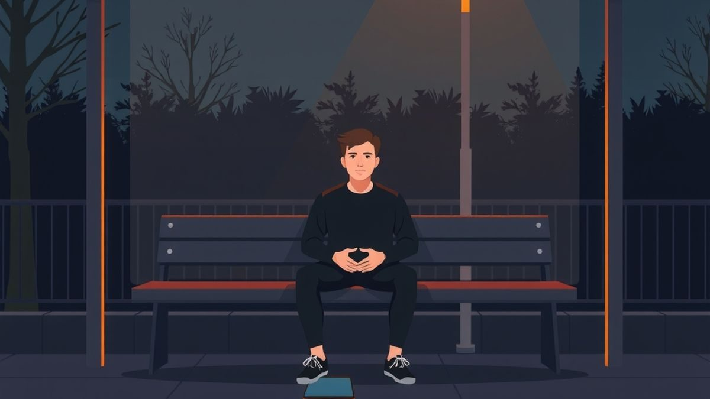
Boredom and Phone Use: Why Boredom Isn't an Emergency
Why you grab your phone the second you're bored, what studies say it does to the boredom, and how to treat that feeling as a signal instead of a crisis.

Rest Days for Bodyweight Training: How Many Do You Need?
How many rest days does bodyweight training need? A number for each kind of routine, sample weeks, what to do on rest days, and when to take an extra day off.

No-Equipment Leg Workout: Wall Sits, Squats or Lunges?
The best no-equipment leg workout starts with one choice: squats, lunges or wall sits. What each is for, what the research says, and a 15-minute plan by level.

Motivation Follows Action: How to Get Motivated to Work Out
How to get motivated to work out when you don't feel like it: why waiting fails, why the feeling often shows up after you start, and a 2-minute start to use.

Squats Every Day: Is It Safe and What Happens?
Is it safe to do squats every day? What happens in week one and after, a daily plan by level, easier versions, and the signs it's time to take a day off.

Plank Variations for Beginners: 8 Moves, Easiest First
Eight plank variations for beginners, from the counter plank to the side plank and shoulder taps, with an easier version, form cues and a 3-day plan.

Bodyweight Strength Training at Home: A Plan That Progresses
Bodyweight strength training at home works if every move keeps getting harder. Five exercise ladders, one rule for moving up, a 3-day plan, and the research.

Short-Form Video and Attention Span: What the Research Says
Is short-form video shrinking your attention span? What 71 studies and three experiments show, what's a myth, why the habit matters more than minutes.

How to Stop Checking Your Phone First Thing in the Morning
How to stop checking your phone first thing in the morning: a 3-minute night-before setup, the iOS 27 settings that help, and a better first 10 minutes.
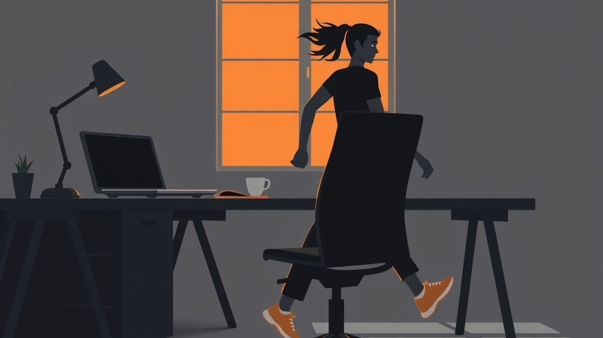
Sitting All Day? The Exercise Breaks That Actually Help
Sitting all day? How often to get up, how long a break needs to be, the desk exercises worth doing, and what the research says about undoing it.

A 5-Minute Morning Workout You Can Do Next to Your Bed
A 5-minute morning workout you can do next to your bed: five moves, one minute each, an easier version of every step, and a setup that runs half-asleep.
How to Check Screen Time on iPhone (and What the Numbers Mean)
How to check screen time on iPhone in iOS 27 and iOS 26, what pickups and notifications really count, and a 7-day way to read your report honestly.
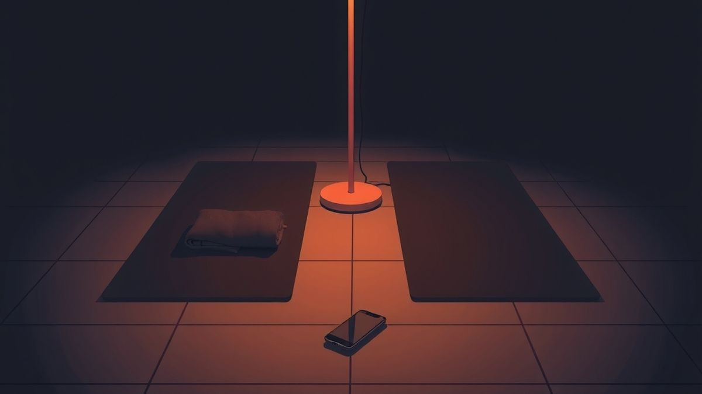
Sit-Ups vs. Crunches: Which Should You Do?
Sit-ups vs crunches: the real difference, what the back research shows (lab and big trials), which one to pick, form steps, easier versions and a plan.
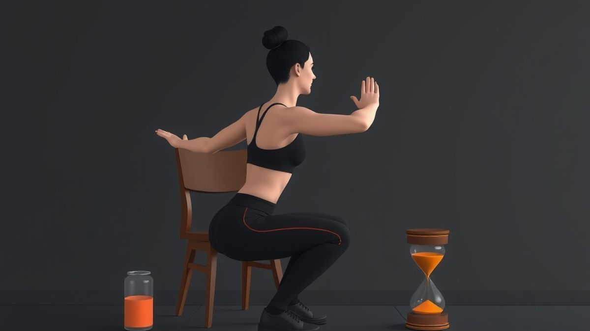
Slow Down the Lowering: The Short Daily Workout That Works
Slow eccentric reps make a short daily workout count. What the 5-minute studies found, their honest limits, and a beginner routine you can do today.
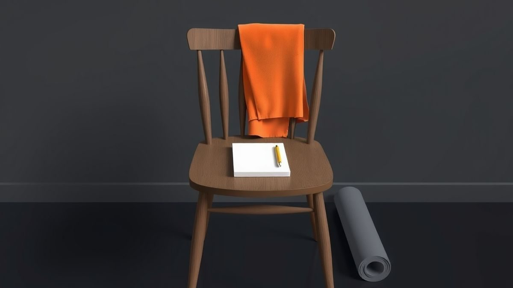
The 100-Rep Method: Can Bodyweight Build Muscle?
The 100-rep method: one exercise, 100 reps, as few sets as it takes. Why it can build muscle without a gym, the honest limits, and a beginner version.

Dopamine Detox Is the Wrong Frame. Try Friction Instead.
Does a dopamine detox work? Not the way the name says. What the research supports instead: small, permanent friction on the habits that eat your day.
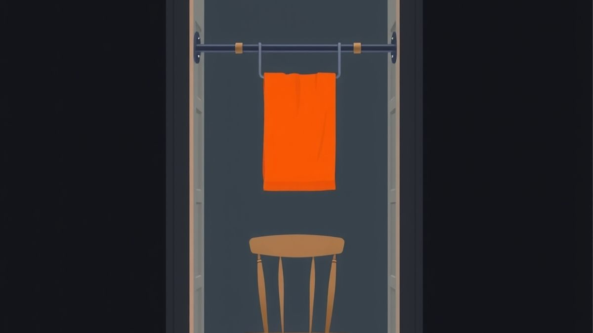
How to Do Your First Pull-Up (An 8-Week Plan From Zero)
Can't do a single pull-up? How to do your first pull-up from zero: hangs, rows, slow negatives and assisted reps, with an 8-week plan and honest timing.

The 10-Rep Rule: Habit Stacking Exercise That Sticks
Habit stacking exercise works when the anchor is exact and the set is tiny. What the research really says, why 10 reps is the rule, and stacks to start.
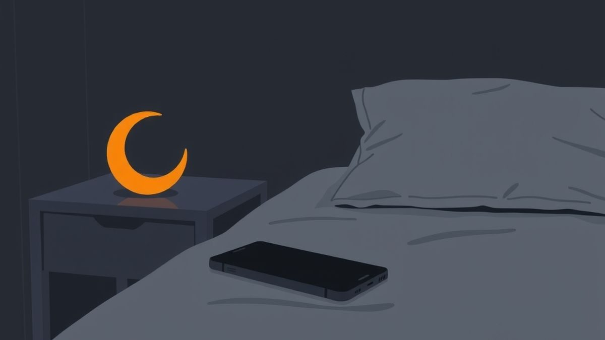
How to Use iPhone Downtime and Sleep Focus Together
iPhone Downtime and Sleep Focus do different jobs. Here's what each one does in iOS 27 (and iOS 26), how to line them up, and the settings that make them hold.
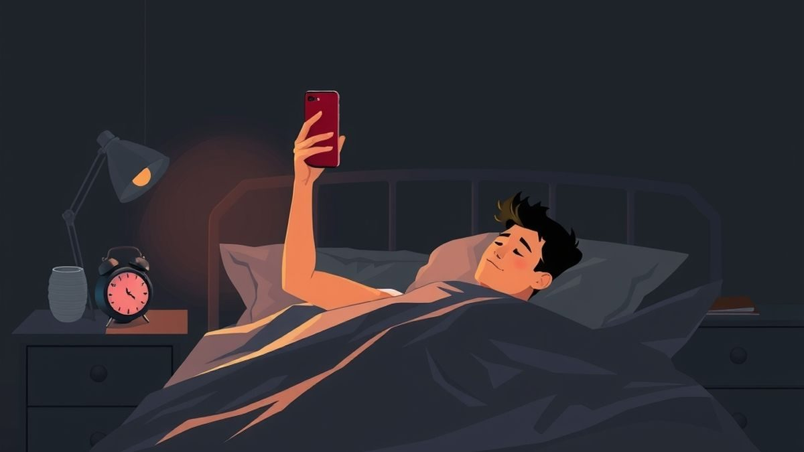
Your Phone Before Bed Isn't the Problem. Your Phone in Bed Is.
Is using your phone before bed bad? The research says the real damage starts once you're in bed. What the studies show, blue light included, and what to change.

How Long Should You Hold a Plank? Less Than You Think
How long to hold a plank at every level, why short holds with rest beat one long one, what a normal plank time is, easier versions and a 4-week plan.
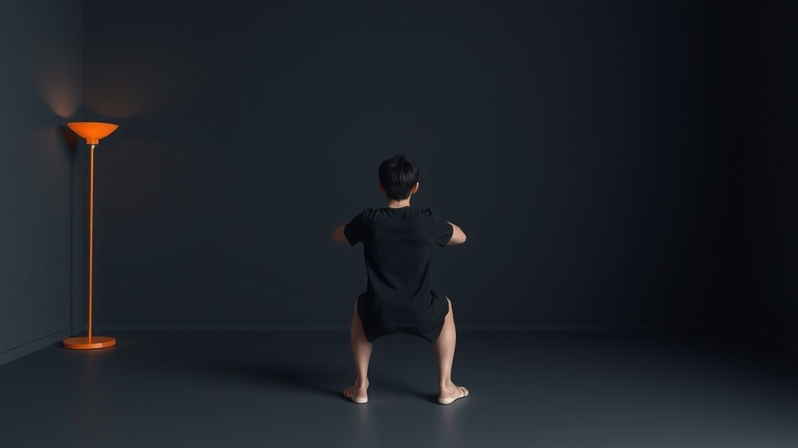
Bodyweight Squat Form: 6 Steps and the 5 Mistakes to Fix
Bodyweight squat form in six steps, the five mistakes nearly everyone makes and how to fix each, what to do about knees past toes, and easier versions.
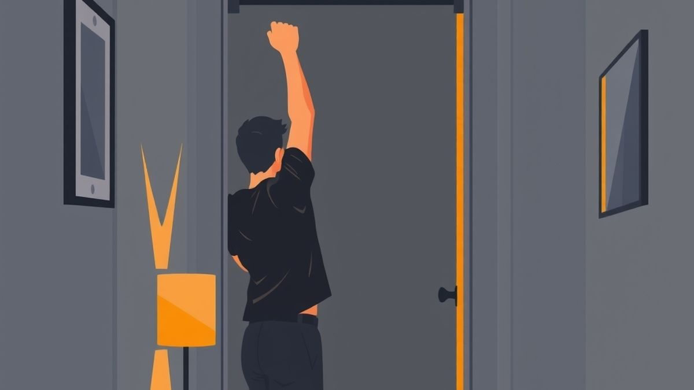
Grease the Groove: Get Stronger With Sets You Barely Notice
Grease the groove means small, easy sets spread through your day. How many reps, how often, what the research says, and a simple plan to start today.
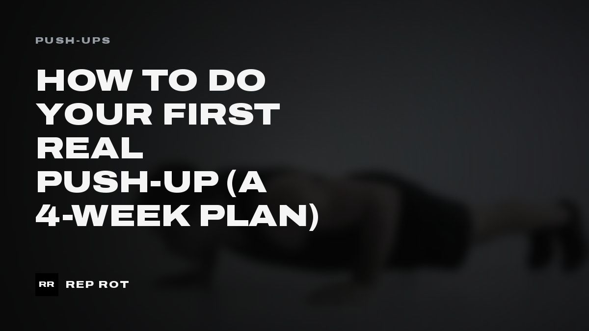
How to Do Your First Real Push-Up (A 4-Week Plan)
Can't do one push-up yet? A 4-week plan for push-ups for beginners: a ladder of household surfaces, slow negatives, form fixes and when to move on.
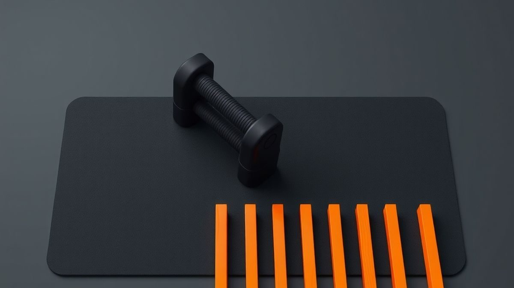
How Many Push-Ups Should You Do a Day?
How many push-ups a day to do, based on one honest test set: a table by level, easier versions, rest days, and what the 40 push-up study really found.
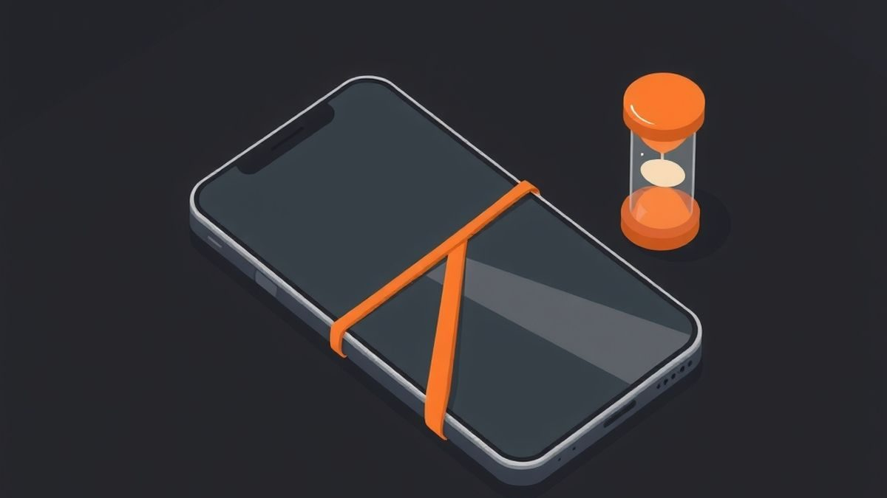
How to Set App Limits on iPhone That Actually Stick
How to set app limits on iPhone in iOS 27 (and iOS 26), why most limits get ignored by day three, and the settings that make them hold when you're tired.
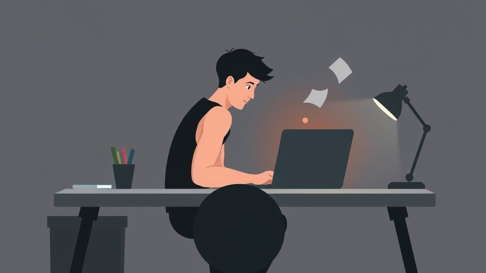
How Long Does It Take to Refocus After a Notification?
How long does it take to refocus after a notification? What the famous 23-minute number really measured, what's unproven, and how to get back faster.
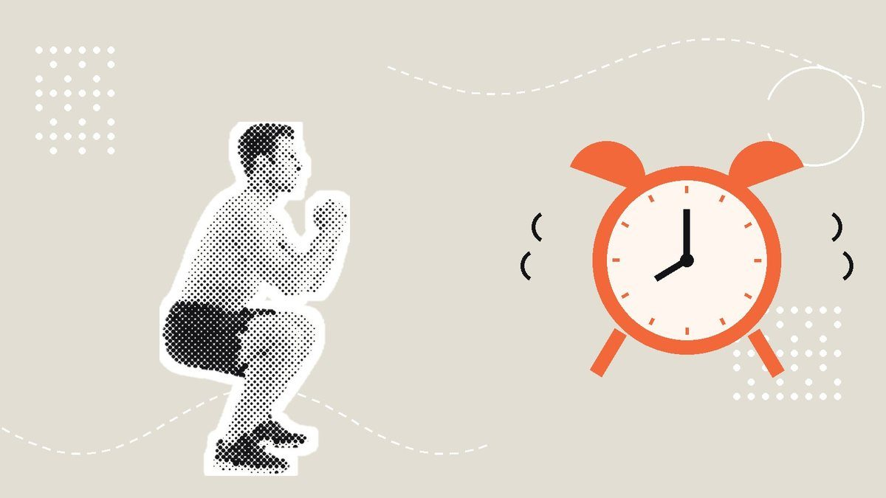
Your Alarm Isn't Too Quiet. Your Bed Is Too Easy.
How to get out of bed in the morning when the alarm keeps losing: why 6 a.m. is the worst time to decide, and a 60-second routine that decides for you.
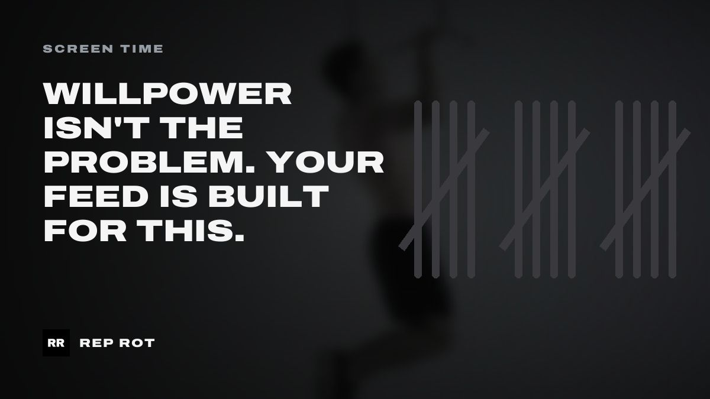
Willpower Isn't the Problem. Your Feed Is Built for This.
Why you can't stop scrolling even when you want to, and why the answer isn't more discipline: it's changing what happens when the urge hits.

The Phone Is the Enemy of Focus: Brian Chesky's Big-Screen Rule
Airbnb's Brian Chesky says attention span shrinks with screen size. What the research says, and how to use the big-screen rule to focus better.
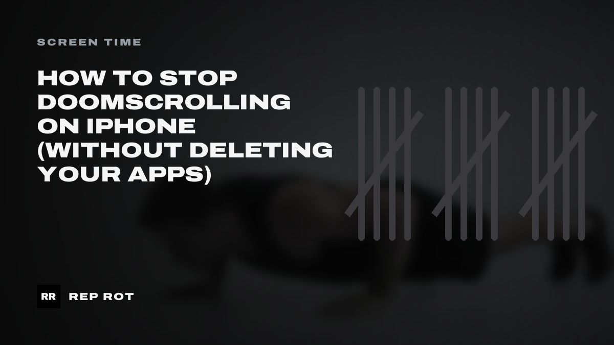
How to Stop Doomscrolling on iPhone (Without Deleting Your Apps)
A practical setup to stop doomscrolling on iPhone: the Screen Time settings that matter in iOS 27, the friction that actually works, and what to do instead.
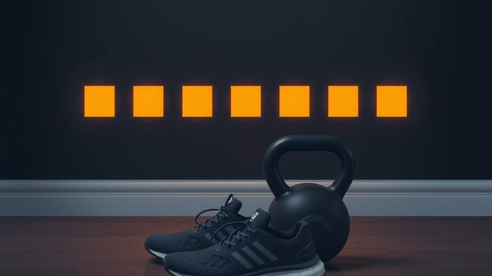
How to Stay Consistent With Working Out: Adjust, Don't Miss
Two lifters, two rules for staying consistent with working out: get good at one thing at a time, and on bad days make it easier instead of skipping.
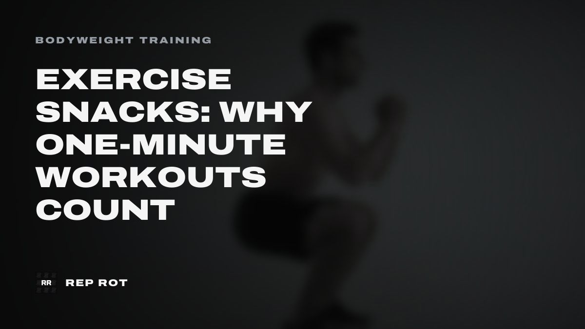
Exercise Snacks: Why One-Minute Workouts Count
Exercise snacks are short bursts of hard effort spread across the day. What the research shows, how to do them at home, and a simple plan to start.